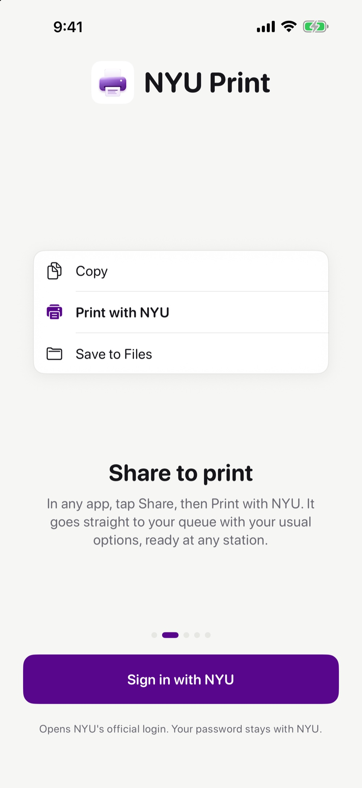
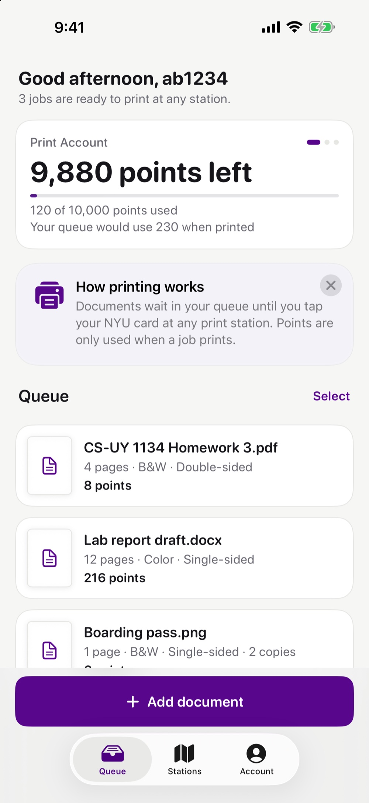
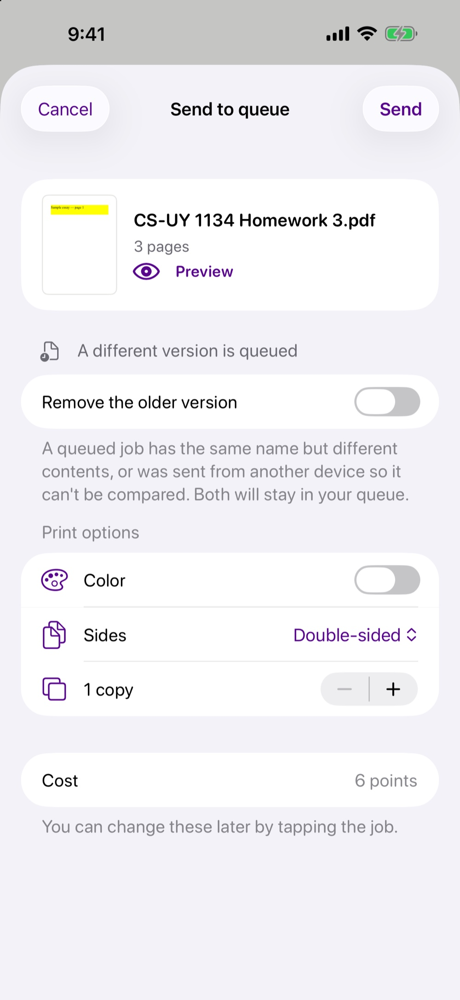
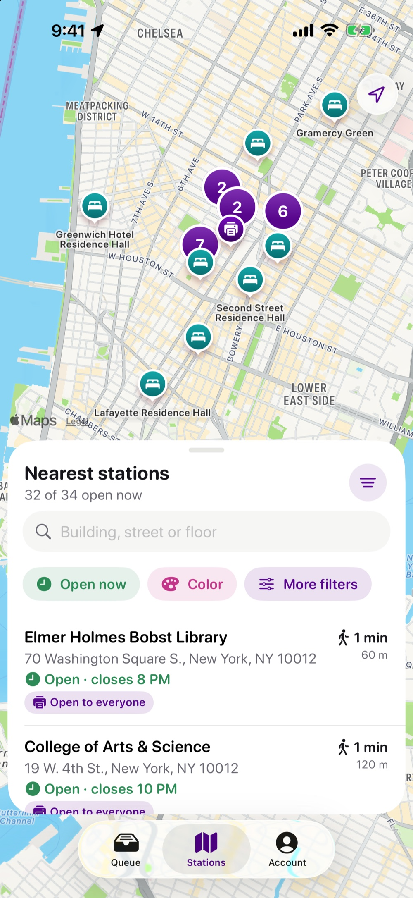
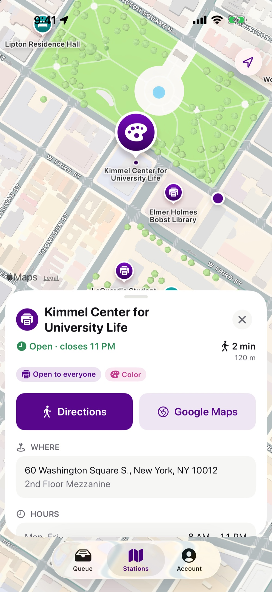
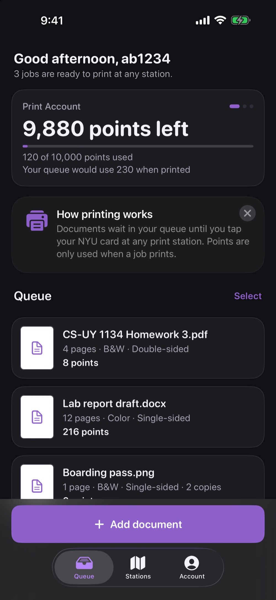

Printing at NYU,
without the portal.
Share any document to your NYU print queue, see your points at a glance, and find the nearest print station.

Share to print
In any app, tap Share, then Print with NYU. It lands in your queue with your usual options.

Your queue and points
Points left this term, and what your queue will use when it prints.

Send in a few taps
Preview, choose color, sides and copies. Change them later by tapping the job.

Find a station
Every NYU print station on a map, nearest first, with what's open now.

Floors, hours, directions
Which floor, when it closes, color or not, and walking directions.

Light or dark
Follows your iPhone, or pick one in Account.
Signs in with NYU
You sign in on NYU's own login page. Your password never reaches the app, and there are no analytics or ads. Read the privacy policy.